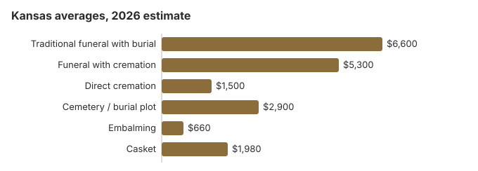

Funeral Costs in Kansas: What Families Pay in 2026
A Kansas funeral costs anywhere from about $1,500 for direct cremation to around $6,600 for a traditional service with burial, before a plot near $2,900. That traditional figure is about 20% under the $8,300 national median, and Kansas splits evenly between burial and cremation at 50%. Prices are not standardized, so the first funeral home you call matters. The sections below cover each line item, the $20 Kansas death certificate, coroner-arranged burials under K.S.A. 22a-215, and the national and state veterans cemeteries.
Kansas Funeral Prices, Line by Line
Our Kansas estimates by item are below. The State Board of Mortuary Arts licenses homes here; each sets its own prices.
| Line item | Kansas average | Usual range |
|---|---|---|
| Traditional funeral with burial | $6,600 | $4,950 – $8,580 |
| Funeral with cremation | $5,300 | $4,240 – $6,890 |
| Direct cremation | $1,500 | $1,050 – $2,100 |
| Cemetery / burial plot | $2,900 | $1,450 – $5,800 |
| Embalming | $660 | $500 – $1,500 |
| Casket | $1,980 | $660 – $5,280 |
About these Kansas prices: we model them for the state as a whole rather than gathering quotes from Kansas funeral homes, so treat them as a guide, not a quote or professional advice. Our modeling notes and disclaimer explain more.
State sources: Kansas State Board of Mortuary Arts; K.S.A. 22a-215; K.S.A. 39-713d.

Kansas Cremation and Burial in Depth
Two Kansas pages go deeper:
Cremation Costs in Kansas
Half of Kansas deaths (50%) now end in cremation. Prices start near $1,500 direct and $5,300 with a service; urns, scattering and memorials are covered too.
Burial Costs in Kansas
Plots from about $2,900, plus casket, vault, headstone and opening and closing, for a Kansas burial total of $14,590-$19,090.
Kansas Charges Worth Questioning
Kansas quotes often grow after the first call. Look for these:
- Embalming billed as if the law demanded it, which in Kansas it rarely does.
Who Helps Pay for a Kansas Funeral
- When a Kansas coroner handles a disposition, the money comes first from the person's own property found with the body, then from state assistance for those who qualified under K.S.A. 39-713d, and finally from the county general fund.
- The Kansas funeral home will normally notify Social Security of the death, yet the $255 is not automatic: a surviving spouse or qualifying child claims it at 1-800-772-1213, within two years.
- Whoever paid a Kansas veteran's funeral can file VA Form 21P-530EZ. For a death not connected to service on or after October 1, 2026, VA can pay up to $1,032 toward burial, with a separate $1,032 plot allowance; the veteran burial benefits guide spells out who qualifies.
- Medicaid and charitable help for Kansas families are in the funeral payment assistance guide; how to pay for a funeral with no money covers the case where nothing is left to spend.
Educational Resources
- Funeral Consumers AllianceIndependent nonprofit consumer advocacy for funeral rights
- FTC Funeral RuleThe federal rule protecting funeral consumers
- Funeral Insurance GuideCompare final expense and burial insurance options
- Best Burial Insurance CompaniesSide-by-side comparison of top burial insurance providers
- Payment Assistance GuideGovernment programs and financial help for funeral costs
- Insurance Plan ComparisonCompare coverage, premiums, and payout speed across providers
Compare Funeral Costs
- Average Funeral Cost in 2026National cost breakdown with real prices
- Cremation vs. Burial Cost ComparisonSide-by-side price comparison to help you decide
- Funeral Cost BreakdownEvery line item explained: know what you're paying for
- Cheapest Funeral OptionsLower-cost alternatives, with typical price ranges
- Direct Cremation: Most Affordable OptionNFDA 2023 median $2,645 with a family-supplied container (latest available)
- How to Compare Funeral PricesStep-by-step guide to getting the best price
What the Law Guarantees You in Kansas
If you believe a funeral home in Kansas has violated these rights, you can file a complaint with the FTC at ftc.gov or contact the Funeral Consumers Alliance for guidance. Questions or complaints about a Kansas funeral home can go to the board at 700 SW Jackson Street, Suite 904, in Topeka (785-296-3980).
Why Kansas Quotes Differ
Midwest funerals usually cost less than the $8,300 US median, and Kansas follows suit. Within the state, the price depends on how many homes compete near you, local costs and wages, state paperwork and building costs; a Wichita or Johnson County home can be 10-30% off a rural one.
At 50%, Kansas's cremation rate is 13.4 points below the 63.4% national rate that NFDA projected for 2025.
Kansas: Cremation or Burial
Cremation
- Direct cremation around $1,500
- Cremation with a service around $5,300
- No grave needed
- Keep, bury or scatter the remains
- Half of Kansas families (50%)
Traditional Burial
- Traditional funeral around $6,600
- Kansas plot around $2,900
- Cemeteries generally require a vault or liner
- A fixed grave for visits
- Metal caskets: near $2,500 as a national median (NFDA 2023 General Price List Study); Kansas sellers set their own prices
Independent Homes in Kansas
Kansas still has more independent, family-owned funeral homes than coastal states, and they tend to price nearer the NFDA national averages than chain-owned locations. Ask a Kansas home who owns it; the answer is a fair guide to where its price list will land. No Kansas agency measures the gap: the State Board of Mortuary Arts licenses chain and family homes under the same rules, so each home's General Price List under the FTC Funeral Rule is the only way to see it.
Low-Cost Kansas Options (2026)
| Option | Kansas estimate | Includes |
|---|---|---|
| Direct cremation | $1,500 | Cremation with no viewing or service; Kansas needs a permit but sets no fixed wait (K.S.A. 65-1762; 65-2426a). |
| Direct burial | $3,300 | Prompt burial with no embalming and no viewing; Kansas cemeteries add the plot and the opening as separate charges. |
| Green burial | $3,630 | Burial with no embalming and no vault, at a Kansas cemetery that allows it. |
| Cremation + memorial | $5,300 | Cremation first, memorial service afterward |
| Traditional funeral | $6,600 | Viewing, funeral service and burial |
Kansas City-by-City Costs
Wichita, Overland Park, Kansas City, Topeka and smaller Kansas towns price differently. City estimates:
Kansas Funeral Planning Steps
Arranging a Kansas funeral this week? Take these steps in order:
- Burial or cremation: cremation in Kansas or burial in Kansas.
Kansas death certificates: $20 each, first fee covers the search
The Kansas Department of Health and Environment's Office of Vital Statistics in Topeka charges $20 for every certified copy of a death certificate, a fee set by K.A.R. 28-17-6 that rose from $15 on July 1, 2022 (KDHE, Death Certificate; checked October 29, 2026). The first $20 also pays for a five-year search, and KDHE keeps it if no record turns up, so check the date and county of death before you order.
- Walk-in: weekdays 9 a.m. to 4 p.m.; most requests are filled in about 15-20 minutes.
- Phone or online: orders through VitalChek (877-305-8315) carry an added $15 expedite fee. KDHE's IKAN app charges $20 per copy plus $5.
- By mail: expect seven to ten business days once the office receives the request.
Banks, insurers and the county register of deeds each usually want their own certified copy, so a Kansas estate with a house, a pension and a couple of accounts can easily use five ($100).
The Kansas board, coroner burials and veterans cemeteries
Kansas funeral homes are licensed by the Kansas State Board of Mortuary Arts. Call it at 785-296-3980 if a home will not show its prices or leans on you to buy more.
The Funeral Consumers Alliance does not include Kansas in its count of nine states with funeral-director requirements. Hiring a home is optional for most steps, and you can pay for just the services you choose.
No fixed waiting period applies before a Kansas cremation, but the permit must come first (K.S.A. 65-1762; 65-2426a).
Unclaimed bodies
When no family claims a body, the Kansas coroner arranges burial or cremation (K.S.A. 22a-215). Payment comes in order: property found with the person, then the state assistance program if the person qualified under K.S.A. 39-713d, and last the county general fund. (Source: K.S.A. 22a-215; K.S.A. 39-713d.) Social Security adds only a one-time $255, and only for a qualifying spouse or child, which will not go far against a $6,600 Kansas funeral.
Kansas veterans cemeteries
Leavenworth National Cemetery (913-727-1376), Fort Scott National Cemetery (913-212-4612) and Fort Leavenworth National Cemetery (913-684-4348, cremated remains only) are reserved by the funeral home through the VA's National Cemetery Scheduling Office (800-535-1117). Kansas's four state veterans cemeteries take requests directly: Fort Dodge (620-682-7564), Fort Riley / Manhattan (785-717-3050), WaKeeney (785-743-5685) and Winfield (620-705-6300).
Kansas steps
- Lay two Kansas funeral homes' printed price lists on the table and go through them line by line.
- Plan a Kansas memorial for after the burial or cremation to avoid paying for embalming and a viewing.
- When the person had no means, ask the county coroner whether K.S.A. 22a-215 applies before anyone signs.
- For a veteran, get the Leavenworth National Cemetery option before pricing a private Kansas plot.
- The board's number, 785-296-3980, is the one to call if a home will not stick to its price list.
Frequently Asked Questions
How much does a Kansas funeral cost in 2026?
A full traditional Kansas funeral averages about $6,600 on our estimate, a fifth below the $8,300 national median. Cremation with a ceremony is closer to $5,300 and direct cremation can be near $1,500, while a Kansas cemetery plot adds about $2,900. Providers differ a lot, so compare before you choose.
What does cremation save in Kansas?
Plenty. Direct cremation starts near $1,500 in Kansas, while a traditional funeral with burial averages $6,600 before the plot or vault, a gap of at least $5,100.
What does the law guarantee Kansas funeral buyers?
Kansas homes follow the FTC Funeral Rule: you get an itemized General Price List, prices over the phone, and the right to supply your own casket with no handling fee. The Funeral Consumers Alliance says Kansas families need not hire a funeral director for every step. Licensing and complaints go to the Kansas State Board of Mortuary Arts, 785-296-3980.
How do Kansas families cut funeral costs?
Get price lists from two or three Kansas homes and compare them item by item; that alone often saves $1,000 or more. Township and county cemeteries are hard to find online yet often cost half what private Kansas cemeteries charge, so call the clerk in the county of burial. Family-owned homes, still the majority in Kansas, usually price more openly than chains, and direct cremation at about $1,500 is the least costly choice.
Do I have to embalm a loved one in Kansas?
No law makes it routine. A Kansas funeral home may not claim embalming is legally required when it is not, under the FTC Funeral Rule, and its General Price List has to say embalming is not required except in special cases. If a home insists, ask it to put the rule it relies on in writing.
Is Kansas above or below the national average?
Below it. At $6,600, the Kansas traditional average is 20% under the $8,300 national median, in line with generally lower Midwest prices.
What is the cheapest Kansas funeral option?
Direct cremation, around $1,500 in Kansas, covers transport, the cremation and return of the ashes. For burial, direct burial (no viewing or ceremony) runs near $3,300 here before cemetery fees.
How can I find a low-cost Kansas funeral home?
Collect General Price Lists from three Kansas homes and start with what each charges for direct cremation and for immediate burial. A casket or urn you bring from elsewhere cannot carry an extra fee under the FTC Funeral Rule.